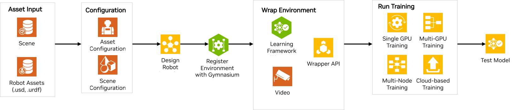
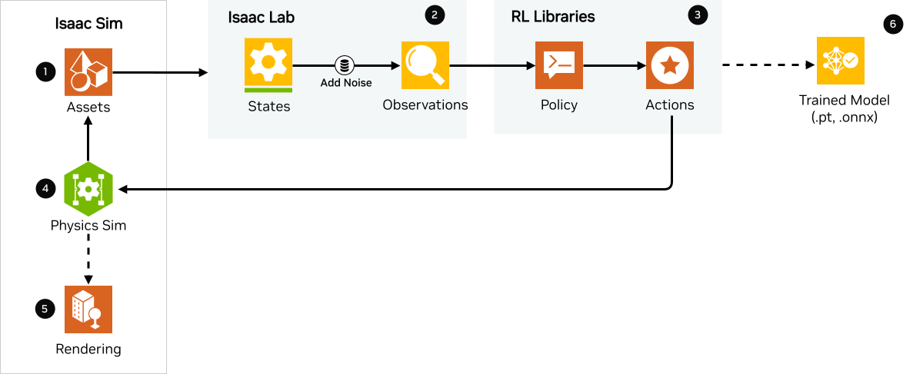
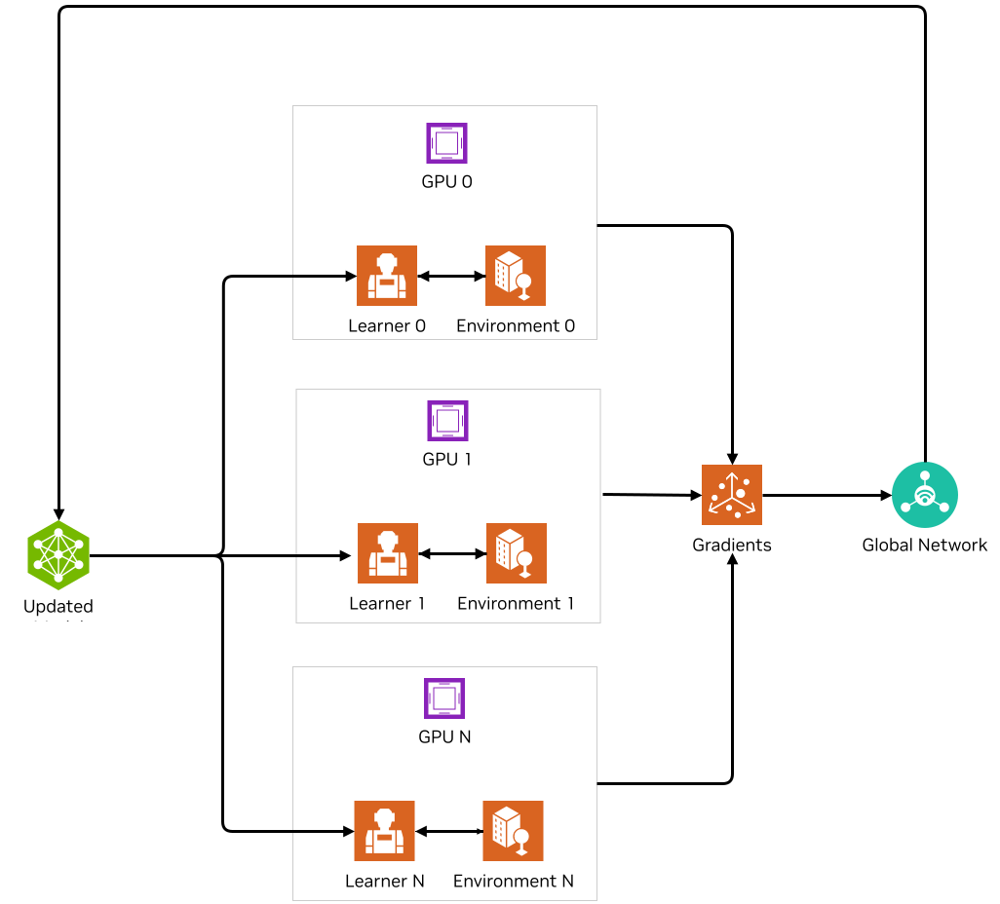
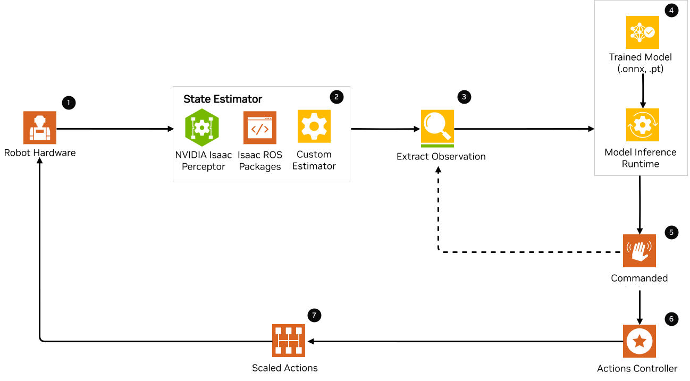

参考架构#
本文档介绍了使用 Isaac Lab 和 Isaac Sim 的端到端机器人学习过程概述。通过使用一个参考架构，展示了训练和部署工作流的主要构建模块。它提供了一个全面、用户友好的指南，涵盖了从训练到将训练好的模型部署到现实世界的整个应用开发过程，包括演示链接、工作示例和文档。
这个文档适用于谁？#
本文档旨在帮助在机器人学习领域使用 NVIDIA Isaac Lab 的机器人开发者和研究人员，包括研究实验室、原始设备制造商（OEM）、解决方案提供商、解决方案集成商（SI）以及独立软件供应商（ISV）。它为使用 Isaac Lab 的机器人训练框架和工作流提供指导，作为环境配置、任务设计和策略训练与测试的基础起点。
Isaac Lab 的参考架构包括以下组件:
组件#
在本节中，我们将简要讨论为在 Isaac Lab 中创建示例参考应用程序的各个模块。
组件 1 - 资产输入#
Isaac Lab 支持 URDF、MJCF XML 或 USD 文件作为资产。使用 Isaac Lab 进行训练的第一步是拥有资产的 USD 文件以及机器人的 USD 或 URDF 文件。可以通过以下方式实现:
在 Isaac Sim 中设计资产或机器人并导出 USD 文件。
在任何您选择的软件中设计资产或机器人，并使用 Isaac Sim 转换器导出为 USD。Isaac Sim 支持不同的转换器/导入器，例如 CAD Converter 、 URDF Importer 、 MJCF Importer 、 Onshape Importer 等。更多细节请参见 导入资产部分 和 Isaac Sim 参考架构 中的相关内容。
如果您已经有了机器人 (URDF 或 MJCF) 文件，则不需要转换为 USD，因为 Isaac Lab 支持 URDF 和 MJCF XML 格式。
组件 2 - 配置 - 资产与场景#
资产配置#
假设您已拥有机器人的资产文件和基于任务所需的其他环境对象资产，接下来的步骤是将它们导入到 Isaac Lab 中。Isaac Lab 使用资产配置类通过 Python 将各种对象（或原型）生成到场景中。第一步是编写配置类，以定义完成任务所需资产的属性。例如，一个简单的移动机器人前往目标任务会包括机器人资产、一个如立方体的物体来视觉化目标位置、灯光、地面等。Isaac Lab 使用配置类来理解这些资产。Isaac Lab 提供了各种适用于仿真的资产，例如包含准确物理属性和行为的真实物理 3D 对象。它还提供了与现实世界相连接的数据流，以在仿真的数字世界中代表真实世界，如 机器人 ，包括 ANYbotics Anymal、Unitree H1 Humanoid 等，以及 传感器 。我们提供了这些资产配置类。用户还可以使用配置类定义自己的资产。
请参阅关于 如何编写 Articulation 和 ArticulationCfg 类 的教程。
场景配置#
在定义了单个资产配置后，接下来是将所有资产组合成一个场景。场景配置是一个简单的配置类，用于初始化场景中完成任务和可视化所需的所有资产。这是 Cartpole 示例场景配置 的一个示例，其中包括了倒立摆、地面和圆顶灯光。
组件 3 - 机器人学习任务设计#
现在，我们有了任务的场景，但还需要定义机器人学习任务。我们将专注于 强化学习 (RL) 算法。在这里，我们定义智能体将执行的 RL 任务。RL 任务被定义为一个马尔科夫决策过程（MDP），它是一种随机决策过程，其中智能体根据当前的状态和与环境的交互做出可选决策。环境为智能体提供当前的状态或观测，并执行智能体提供的动作。环境通过提供下一个状态、奖励、任务完成标志等信息来回应智能体。因此，MDP 的不同组成部分（环境）——状态、动作、奖励、重置、结束等——必须由用户为智能体定义，以便执行给定的任务。
在 Isaac Lab 中，我们提供了两种不同的环境设计工作流。
基于管理器#


此工作流是模块化的，环境被分解为处理不同方面（如计算观测、应用动作和随机化）的单独组件（或管理器）。作为用户，您为每个组件定义不同的配置类。
一个 RL 任务应具有以下配置类:
观测配置: 定义智能体在任务中的观测。
动作配置: 定义智能体的动作类型，即如何将智能体的输出映射到机器人的控制输入。
奖励配置: 定义任务的奖励函数。
终止配置: 定义任务完成或任务回合结束的条件。
您还可以添加其他可选的配置类，例如事件配置，用于定义智能体和环境的随机化和噪声设置；课程配置，用于需要 课程学习 的任务；以及命令配置，用于需要从控制器或设定点控制（例如游戏手柄控制器）的任务。
小技巧
有关如何设计您自己的基于管理器的环境，请参阅 创建基于管理器的强化学习环境 。
直接式#


在此工作流中，您实现一个单一的类，负责计算观测、应用动作和计算奖励。此工作流允许直接控制环境逻辑。
小技巧
有关如何设计您自己的直接环境，请参阅 创建直接工作流RL环境 。
用户可以选择使用 Isaac Lab 提供的多种预配置环境，或者用户可以定义自己的环境。有关这两种工作流的更多技术信息，请参阅 文档 。
除了设计 RL 任务外，您还需要设计智能体的模型、神经网络策略和价值函数。为了训练 RL 智能体解决任务，您需要定义训练的超参数，如训练的轮数、学习率等，以及策略/价值模型的架构。这些内容在特定于您要使用的 RL 库的训练配置文件中定义。示例已在每个任务目录下的智能体文件夹中创建。请参见 RSL-RL 中的 Anymal-B 示例。
组件 4 - 在 Gymnasium 中注册#
下一步是将环境注册到 Gymnasium 注册表中，以便使用唯一的环境名称创建环境。注册是一种使环境在不同的 RL 算法和实验中可访问和可重用的方式。这在 RL 社区中很常见。请参阅关于 注册环境 的教程，了解如何在自己的环境中注册。
组件 5 - 环境封装#
在运行 RL 任务时，您可能希望在不改变环境本身的情况下修改环境的行为。例如，您可能希望创建函数来修改观测或奖励、录制视频或强制执行时间限制。Isaac Lab 利用 gymnasium.Wrapper 类提供的 API 创建仿真环境的接口。
一些封装器包括:
大多数RL库期望它们自己的环境接口变体。这意味着每个库所需的数据类型是不同的。Isaac Lab提供了自己的封装器，将环境转换为用户希望使用的RL库所期望的接口。这些在 isaaclab_rl 中指定
查看 完整列表 的其他封装器API。有关这些封装器如何工作的更多信息，请参阅 包装环境 文档。
添加自己的封装器#
您可以通过将它们添加到Isaac Lab utils 包装器模块来定义自己的封装器。更多信息请参阅 GitHub页面上的包装环境说明 。
组件 6 - 运行训练#
最后一步是运行RL智能体的训练。Isaac Lab提供了脚本，利用四个流行的RL库来训练模型（基于GPU的训练）:
备注
Isaac Lab不提供这些RL库的实现。它们已经由不同的作者实现。我们提供了用于RL库的环境和框架封装器。
如果您希望集成不同版本的提供算法或您的学习库，可以按照 这些说明 进行操作。
单GPU训练#
Isaac Lab支持训练大规模并行环境，以加速RL训练，并为模型提供丰富的数据进行训练。对于单GPU训练，以下步骤展示了Isaac Sim和Isaac Lab中训练的工作流程:
在Isaac Sim中
Isaac Sim提供了资产状态，如机器人和传感器状态，包括在任务观测配置类中定义的观测。
在Isaac Lab中
在事件配置类中定义的状态添加了随机化，以获取任务的观测。随机化是可选的。如果未定义，则状态就是观测。
观测被计算为PyTorch张量，并且可以选择性地包括训练模型根据任务提供的动作。
在RL库中
观测被传递给策略。
策略通过使用RL库算法（如PPO、TRPO等）进行训练，以输出适合机器人执行的正确动作。
动作可以作为控制器的设定点，生成对机器人的动作，或者直接用作基于任务的机器人动作。
例如，四足机器人关节位置的动作作为关节控制器的输入，1或0的速度用于直接控制推车任务中的推车等。
此外，根据任务的定义，先前的动作可以作为下一个观测集的一部分发送。
在Isaac Sim中
来自策略的动作被传回Isaac Sim，以控制正在学习的智能体（即机器人）。这是物理仿真（sim）步骤。这会在Isaac Sim中生成下一个状态，并且奖励在Isaac Lab中计算。
渲染
场景可以被渲染以生成相机的图像。
然后在流程中传递下一个状态，直到训练达到指定的训练步骤或时期。最终产品是经过训练的模型/智能体。
多GPU和多节点训练#
Isaac Lab支持通过利用Linux上的多GPU和多节点训练来扩展训练。请参阅 多GPU训练 和 多节点训练 教程以开始使用。
基于云的训练#
Isaac Lab可以与Isaac Sim一起部署到公共云上，使用 Isaac Automator 。目前支持AWS、GCP、Azure和阿里云。请参阅 如何在云上运行Isaac Lab 教程。
组件 7: 运行测试#
Isaac Lab提供了脚本用于 测试/执行训练后的策略 ，并提供了将训练好的模型从 .pt 格式转换为 .jit 和 .onnx 格式以进行部署的功能。
物理机器人上的部署#
要将训练好的模型部署到真实机器人上，您需要如流程图所示的内容。请注意，这是一个示范参考架构，因此可以根据不同的应用进行调整。首先，您需要一台带有必要传感器和处理计算机（如 NVIDIA Jetson ）的机器人来部署。接下来，您需要为机器人配置状态估计器。状态估计器应该能够提供用于训练的观测列表。
一旦提取出观测，它们会传递到模型中，模型通过推理运行时生成动作。模型中的命令动作作为设定点传递给动作控制器。动作控制器输出缩放后的动作，然后用于控制机器人到达下一个状态，直到任务完成。
NVIDIA Isaac平台提供了一些用于状态估计的工具，包括视觉SLAM和推理引擎，如 TensorRT 。其他推理运行时包括 OnnxRuntime ，直接在PyTorch模型上进行推理等。
总结#
本文档展示了经过SQA测试的Isaac Lab参考架构。我们提供了一个面向用户的端到端机器人学习指南，涵盖了从训练到实际部署的Isaac Lab和Isaac Sim，包括演示、示例和文档链接。
如何开始#
查看我们的资源，了解如何将Isaac Lab与您的机器人结合使用。
查看我们的文档与示例资源
了解有关NVIDIA特色解决方案的更多信息